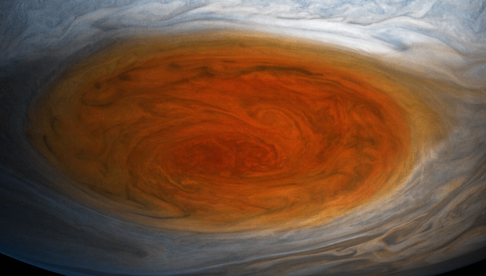
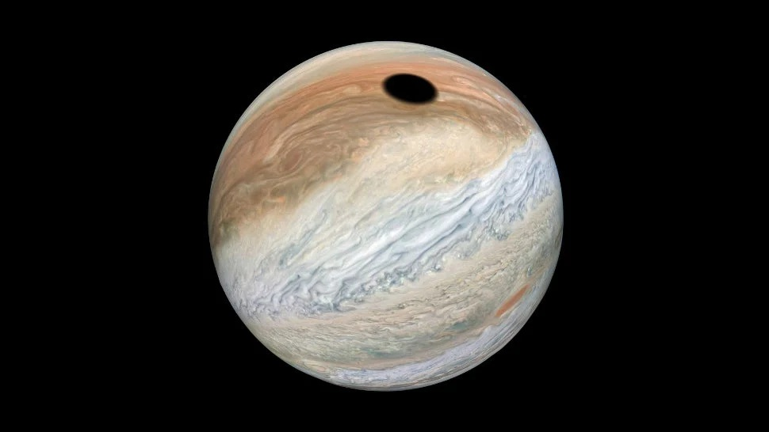
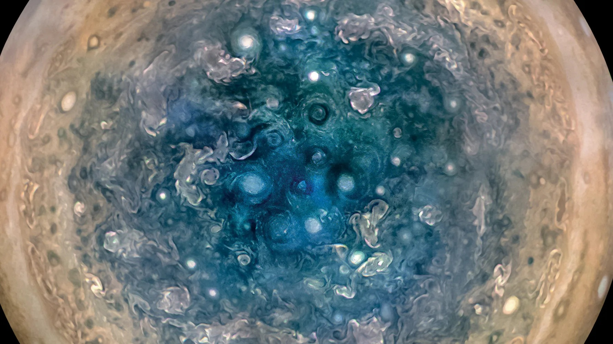

• Type : Planète gazeuse (géante)
• Diamètre : 139 820 km (environ 11 fois celui de la Terre)
• Distance du Soleil : 778,5 millions de km (5,2 unités astronomiques)
• Durée d'un jour : 9 heures et 56 minutes
• Durée d'une année : 11,86 années terrestres
• Nombre de satellites : 79 lunes confirmées
• Température : -145°C (au sommet des nuages)
• Atmosphère : Principalement hydrogène (90%) et hélium (10%), avec traces d'ammoniac, méthane et vapeur d'eau
Jupiter est la plus grande planète du système solaire, si massive qu'elle pourrait contenir toutes les autres planètes réunies plus de deux fois. Son nom vient du roi des dieux dans la mythologie romaine, un choix approprié pour cette planète dominante. Jupiter est principalement composée d'hydrogène et d'hélium, comme le Soleil, mais contrairement à notre étoile, elle n'est pas assez massive pour déclencher des réactions de fusion nucléaire.
Cette géante gazeuse est visible à l'œil nu depuis la Terre et apparaît comme l'un des objets les plus brillants du ciel nocturne. Les observations télescopiques révèlent ses bandes nuageuses colorées et sa célèbre Grande Tache Rouge.
L'atmosphère de Jupiter est caractérisée par des bandes de nuages alternant entre des zones claires (zones) et des bandes plus sombres (ceintures), créées par des vents puissants soufflant dans des directions opposées. Ces vents peuvent atteindre des vitesses de 620 km/h.
La caractéristique atmosphérique la plus célèbre de Jupiter est la Grande Tache Rouge, une gigantesque tempête anticyclonique qui existe depuis au moins 400 ans (depuis qu'elle a été observée pour la première fois par télescope). Cette tempête est si grande qu'elle pourrait contenir deux à trois fois la Terre.
Jupiter possède un vaste système de satellites, avec 79 lunes confirmées. Les quatre plus grandes, découvertes par Galilée en 1610, sont connues sous le nom de lunes galiléennes : Io, Europe, Ganymède et Callisto. Chacune est un monde fascinant en soi :
• Io est l'objet géologiquement le plus actif du système solaire, avec plus de 400 volcans actifs.
• Europe possède une surface de glace sous laquelle se cache probablement un océan d'eau liquide, faisant d'elle une cible privilégiée dans la recherche de vie extraterrestre.
• Ganymède est la plus grande lune du système solaire, plus grande même que la planète Mercure, et possède son propre champ magnétique.
• Callisto est fortement cratérisée et pourrait également abriter un océan sous sa surface.
Jupiter possède également un système d'anneaux, bien que beaucoup moins spectaculaire que celui de Saturne. Ces anneaux sont principalement composés de poussières et sont pratiquement invisibles depuis la Terre.
L'exploration de Jupiter par des sondes spatiales a commencé avec les survols de Pioneer 10 et 11 dans les années 1970, suivis par Voyager 1 et 2. La mission Galileo (1995-2003) a été la première à orbiter autour de Jupiter et à envoyer une sonde dans son atmosphère.
Plus récemment, la sonde Juno, lancée en 2011 et arrivée à Jupiter en 2016, étudie la structure interne, l'atmosphère et la magnétosphère de la planète. Ses données ont révolutionné notre compréhension de cette géante gazeuse, montrant notamment que son noyau est plus diffus qu'on ne le pensait et que ses pôles sont couverts de tempêtes cycloniques organisées en formations géométriques étonnantes.
En raison de sa masse importante, Jupiter joue un rôle crucial dans la dynamique du système solaire. Son influence gravitationnelle a façonné les orbites des autres planètes et des astéroïdes. Elle agit également comme un "bouclier" pour la Terre, attirant et déviant de nombreux comètes et astéroïdes qui pourraient autrement menacer notre planète.

La Grande Tache rouge est un gigantesque anticyclone de l'atmosphère de Jupiter situé à 22 ° sud de latitude. Longue d'environ 15 000 kilomètres et large de près de 12 000 kilomètres (2015), elle est actuellement un peu plus grosse que la Terre, même si elle a atteint des dimensions bien supérieures par le passé.

La lune volcanique Io en transit devant Jupiter, avec l'ombre qu'elle projette sur la planète

La sonde Juno de la NASA a révélé des formations cycloniques étonnantes aux pôles de Jupiter, notamment un cyclone central entouré de plusieurs autres cyclones. Ces structures atmosphériques massives et stables, jamais observées auparavant dans le système solaire, suscitent l'intérêt des scientifiques. Certains de ces cyclones peuvent atteindre des dimensions impressionnantes, avec des diamètres de plus de 4 000 kilomètres.
Chez Cosmos Explorer, nous proposons plusieurs façons de découvrir et d'explorer la planète Jupiter et son système :
• Observation astronomique : Nos télescopes de haute qualité vous permettent d'observer Jupiter, ses bandes nuageuses et même ses quatre principales lunes.
• Exploration virtuelle : Notre simulateur de réalité virtuelle vous permet de "plonger" dans l'atmosphère de Jupiter et d'explorer ses lunes comme si vous y étiez.
• Exposition "Le Système Jovien" : Découvrez notre exposition permanente dédiée à Jupiter et ses lunes, avec maquettes à l'échelle et présentations interactives.
• Conférences spécialisées : Assistez à nos présentations sur les dernières découvertes de la mission Juno et les mystères de cette planète géante.
Pour plus d'informations sur nos programmes d'exploration de Jupiter, consultez notre page d'exploration ou contactez-nous.